原文连接:https://www.cnblogs.com/dashucoding/p/10677868.html
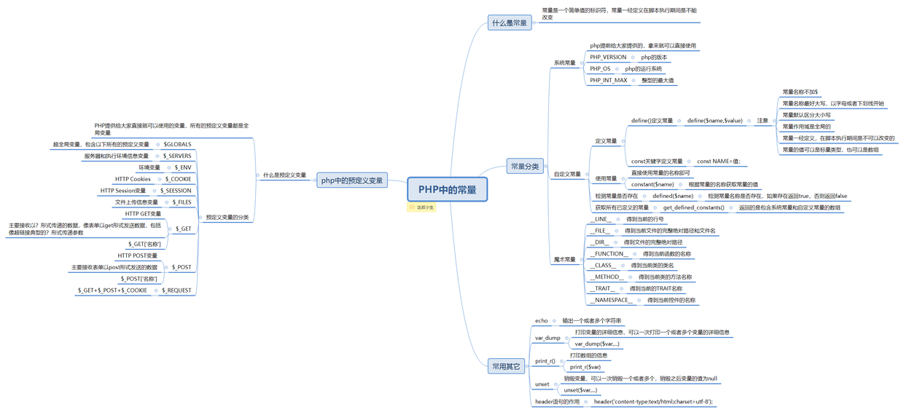
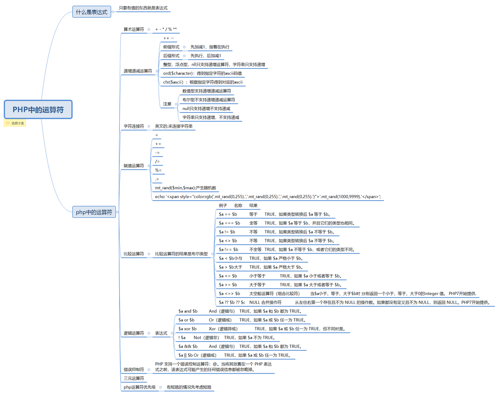
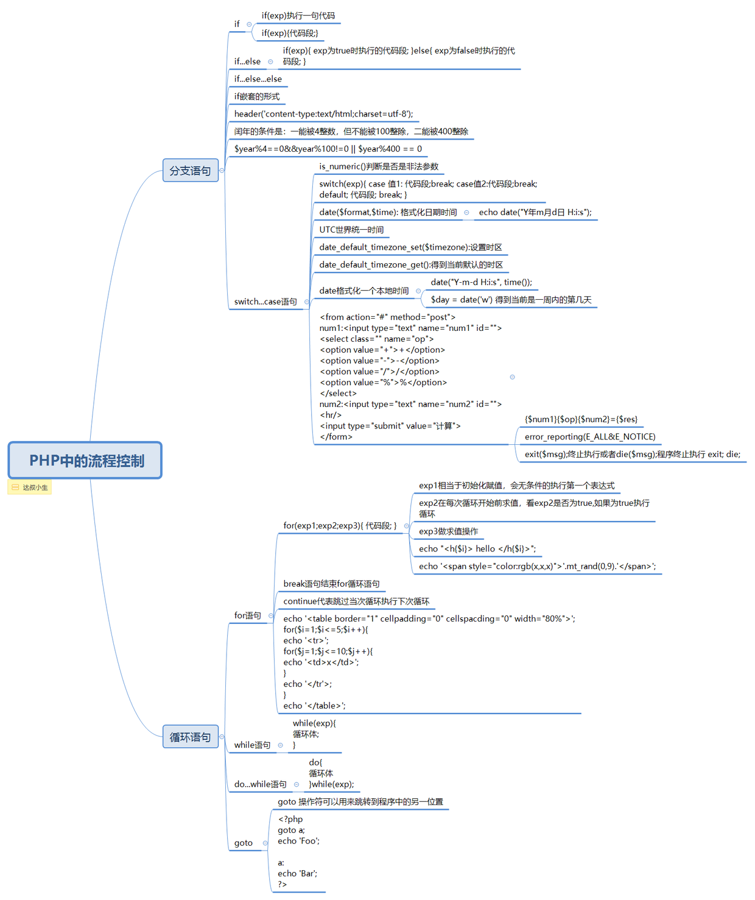

字符函数库：
函数库基础
安装字符串函数库
字符串函数库列表
函数是可以实现特定功能，可以重复执行的代码段。
函数分 内置函数 和 用户函数。
内置函数是指PHP本身提供的各类库函数。
字符串函数库，是PHP核心的组成部分
获取字符串长度：strlen函数
int strlen(string $str)utf-8中文一个代表3个。strlen用于英文等，无中文。
大小写转换：
$str('hh');
strtoupper($str1);ucfirst函数，将句子首字母转换为大写，ucwords函数将每个单词的首字母转换为大写。
string ucfirst(string $str) 和 string ucwords(string $str)字符串的替换函数
str_replace函数区分大小写，str_ireplace函数不区分大小写。
str_replace('a','b',$str); // a 换 b ，是注意大小写的。htmlspecialchars函数，预定义的字符串转换为html实体。
string htmlspecialchars(string $str [,int $flags = ENT_COMPAT)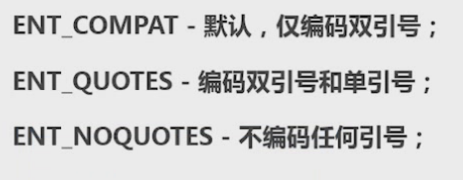
Itrim函数，用于实现删除字符串开始位置的空格或其他字符，用于删除开始的空格，后面不管。
rtrim函数用于实现删除字符串结束位置的空格，或者是其他字符。
string rtrim(string $str[,string $charlist])trim函数用于实现删除字符串开始和结束的位置删除空格。
获取字符串位置相关函数
strpos函数，返回一个字符在另一个字符第一次出现的位置
stripos函数，同理，但是忽略大小写的
strrpos函数，返回的是一个字符串在另一个字符串最后一次出现的位置，strripos函数忽略大小写
字符串截取函数
substr函数，用于实现截取字符串
string substr(string $string, int $start [, int $length])$str = 'javascript';
echo substr($str, 0, 4);<?php
header('content-type:text/html;charset=utf-8');
$filename = 'ab.sd.jpEg';
$num = strrpos($filename, '.');
echo strtolower(substr($filename,$num+1));
?>
// jpEgstrstr函数，将返回一个字符串在另一个字符串中第一次出现的位置，区分大小写。同理，stristr函数忽略大小写。
strrchr函数，将返回一个字符串在另一个字符串最后一次出现的位置。
strrev函数，用于反转字符串。
md5();函数加密。
分割字符串
explode函数，使用一个字符串分割另一个字符串。
$str = "a|b|c";
$arr = explode("|", $str);implode函数，用于将一个一维数组的值转化为字符串。
$arr = array('a','b','c');
$str = implode(',', $arr);格式化字符串：
sprintf函数，格式化字符串。
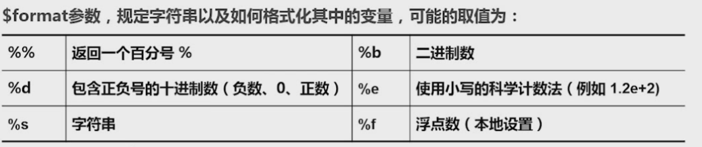
数学函数
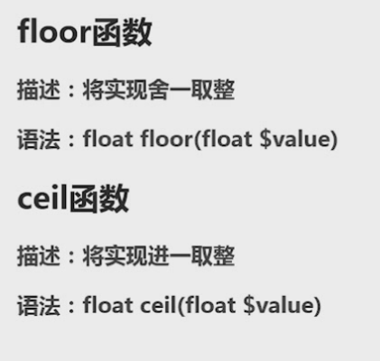
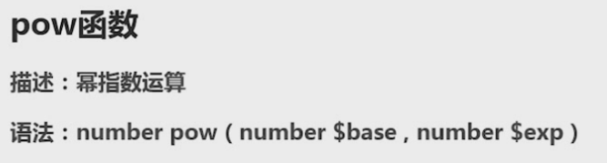
求平方根sqrt
float sqrt(float $arg)最大最小值：max函数，min函数
随机数：rand函数，mt_rand函数。
四舍五入函数，round函数用于实现四舍五入
数字格式化：number_format函数
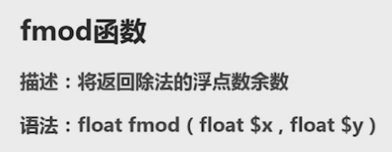
格式化日期：
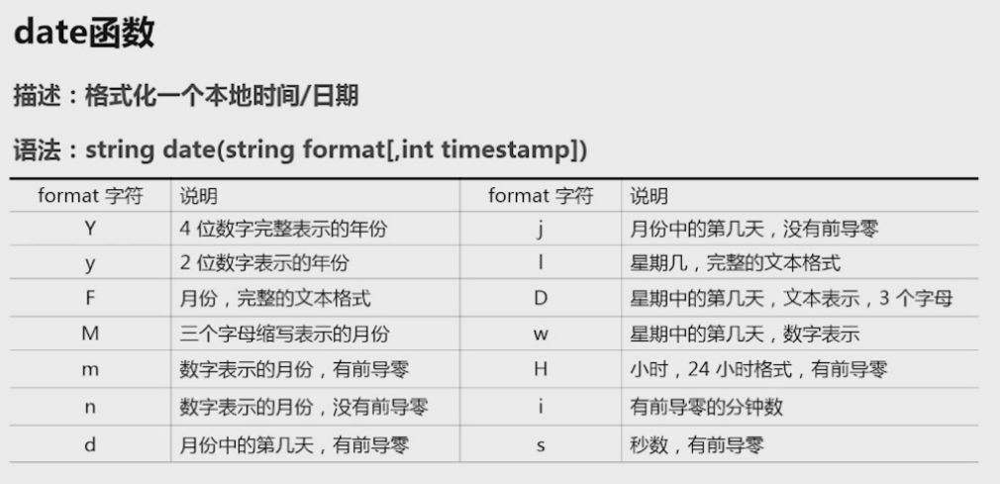
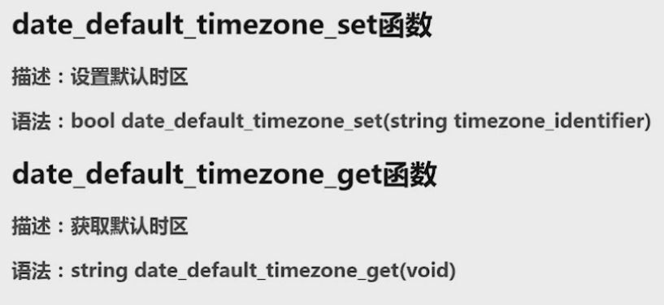
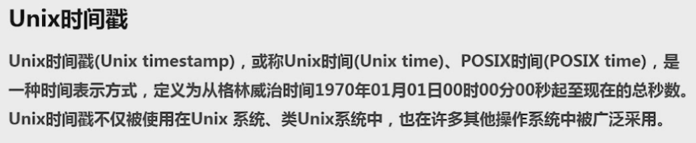
time函数，返回当前Unix时间戳
字符串转时间戳strtotime函数。
生成唯一id，uniqid函数。
获取日期：
getdate函数，获取日期
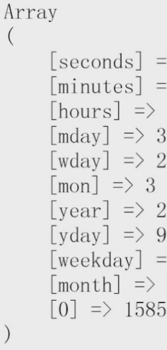
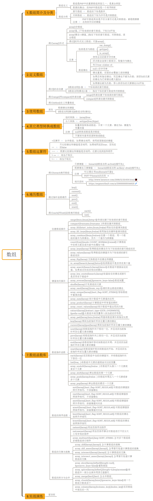
定义数组：
array()
[]
range()
compact()
define()<!DOCTYPE html>
<html>
<head>
<meta charset="utf-8">
<title></title>
</head>
<body>
<form class="" action="#" method="post" enctype="multipart/form-data">
<input type="file" name="files[]" value=""> <br>
<input type="file" name="files[]" value=""> <br>
<input type="file" name="files[]" value=""> <br>
<input type="submit" name="name" value="">
</form>
<?php
print_r($_FILES);
?>
</body>
</html><!DOCTYPE html>
<html lang="en">
<head>
<meta charset="UTF-8">
<meta name="viewport" content="width=device-width, initial-scale=1.0">
<meta http-equiv="X-UA-Compatible" content="ie=edge">
<title>注册页面</title>
</head>
<body>
<form action="doReg.php" method="post">
<input type="text" name="username" id="" placeholder="请输入合法用户名"> <br>
<input type="password" name="password" id="" placeholder="请输入密码"> <br>
<input type="email" name="email" id="" placeholder="请输入合法邮箱"> <br>
<input type="submit" value="注册">
</form>
</body>
</html>数组的遍历：
通过foreach遍历，通过数组的指针函数遍历数组，通过each和list()遍历数组。
foreach语法结构提供了遍历数组的简单方式。foreach应用于数组和对象。
key($arr)得到当前指针所咋位置的键名
current($arr)得到当前指针所在位置的键值
next()将数组中的内部指针向前移动一位，向下移动
prev()向上移动
each 返回数组中当前的键/值对并将数组指针向前移动一步
什么是cookie?cookie有什么用？与cookie相关函数。
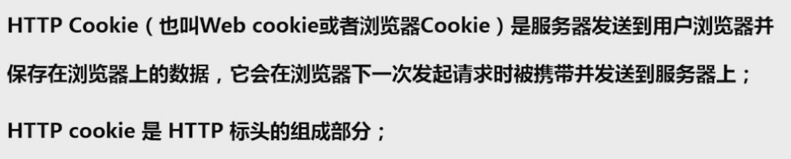
array_multisort对多个数组或多维数组进行排序
array_pad用值将数组填补到指定长度
array_pop将数组最后一个单元弹出
array_product计算数组中所有值的乘积
array_push将一个多多个单元压入数组的末尾
array_rand从数组中随机取出一个或多个单元
array_reduce用回调函数迭代地将数组简化为单一的值
array_reverse返回一个单元顺序相反的数组
array_search在数组中搜索给定的值
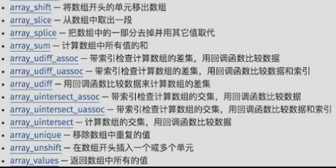
<?php
$username=$_POST['username'];
$password=$_POST['password'];
$email=$_POST['email'];
$userInfo=compact('username','password','email');
print_r($userInfo);
/*
Array
(
[username] =>
[password] =>
[email] => @qq.com
)
array_keys():
array_values():
*/
//INSERT user(username,password,email) VALUES('aaa','bbb','ccc');
$keys=join(',',array_keys($userInfo));
$vals="'".join("','",array_values($userInfo))."'";
// print_r($keys);
// print_r($vals);
$sql="INSERT user({$keys}) VALUES({$vals})";
echo $sql;什么是session?为啥使用session?session的工作原理，与session相关的函数，php配置中的session片段。
session会话控制
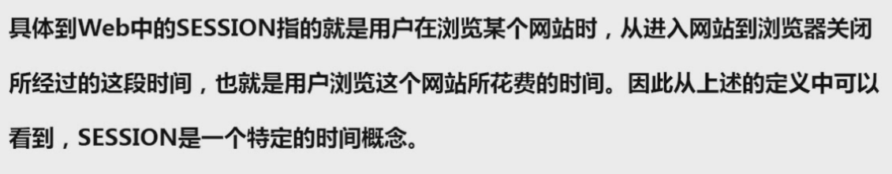
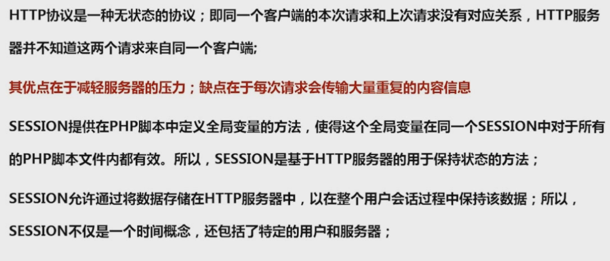
php操作mysql
mysql非永久连接，性能比较低
mysqli永久连接，减轻服务器压力
pdo能实现mysqli的常用功能
mysql连接数据库
连接数据库
mysql_connect($server, $username, $password)选择数据库
mysql_select_db($database_name)设置字符串
mysql_set_charset($charset)mysql方法执行sql语句
mysql_query($query)对insert,update,drop之类的操作，执行成功为true，否则为false。
数据库:
create table addbasicsituation (
BId int(100) not null auto_increment,
primary key(BId)
) engine=InnoDB default charset = utf8$sql = "CREATE TABLE `addappearanceparameter` (
`FId` int(100) NOT NULL AUTO_INCREMENT,
PRIMARY KEY(`FId`)
)ENGINE=InnoDB DEFAULT CHARSET=utf8";
mysql_query($sql);
$sql1 = "ALTER TABLE `addappearanceparameter` ADD `{$row['FName']}` VARCHAR( 100 ) NOT NULL DEFAULT '无'";
mysql_query($sql1);CREATE TABLE `addcellparameters` (
`XId` int(100) NOT NULL AUTO_INCREMENT,
PRIMARY KEY (`XId`)
) ENGINE=InnoDB DEFAULT CHARSET=utf8PHP mysql_fetch_array() 函数
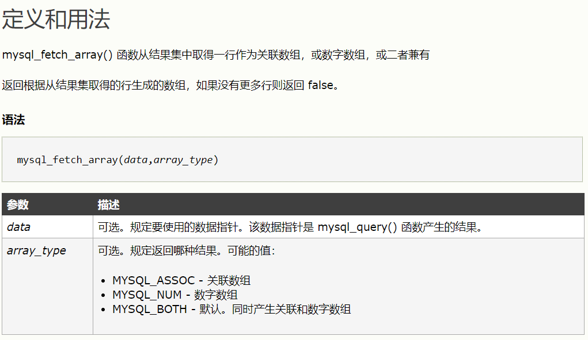
mysql_assoc
mysql_num
mysql_both$sql = "select * from person where name='add'";
$result = mysql_query($sql,$con);
print_r(mysql_fetch_array($result));PHP mysql_fetch_row() 函数，函数从结果集中取得一行作为数字数组。
PHP mysql_fetch_assoc() 函数
session的工作原理
第一次访问，进行http请求，进行初始化session，创建sessionID，将session数据存储到预定义变量$_SESSION中，页面执行完毕，将session信息存储到文件，另一条，将http响应，带有sessionID显示页面sessionID存储到cookie。
进行第二次访问，http请求，带有sessionID，进行session初始化，根据sessionID读取文件（session文件），进行执行php代码，页面执行完毕将session信息存储到session文件，另一个http响应，带有sessionID显示页面，进行退出。
注解session和删除session文件。
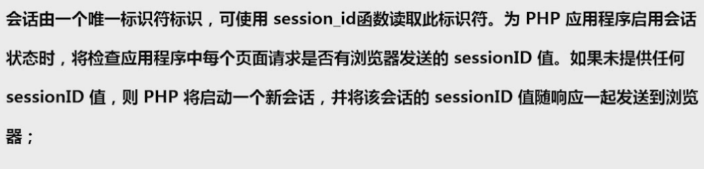
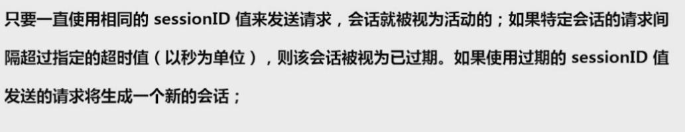
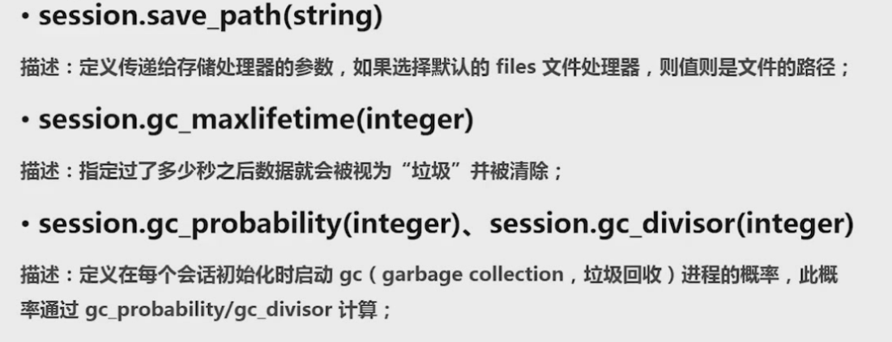
setcookie函数，设置cookie
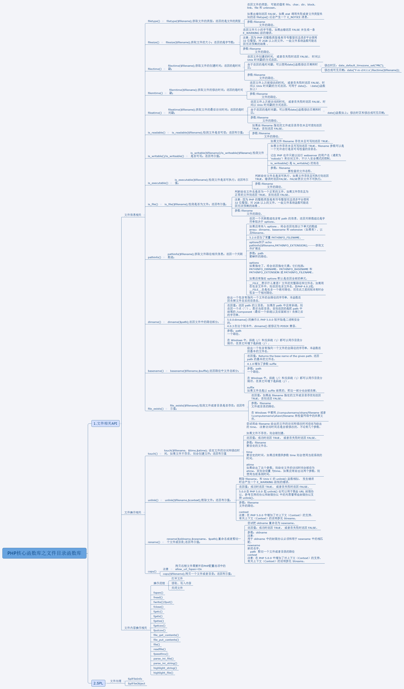
文件操作
文件目录函数库：文件信息相关，文件操作相关，内容操作相关。
目录，资源类型
预定义变量
directory - directory类
directory::close 释放目录句柄
directory::read 从目录句柄中读取条目
directory::rewind 倒回目录句柄chdir — 改变目录
chroot — 改变根目录
closedir — 关闭目录句柄
dir — 返回一个 Directory 类实例
getcwd — 取得当前工作目录
opendir — 打开目录句柄
readdir — 从目录句柄中读取条目
rewinddir — 倒回目录句柄
scandir — 列出指定路径中的文件和目录文件信息
Fileinfo 函数finfo_buffer — 返回一个字符串缓冲区的信息
finfo_close — 关闭 fileinfo 资源
finfo_file — 返回一个文件的信息
finfo_open — 创建一个 fileinfo 资源
finfo_set_flags — 设置 libmagic 配置选项
mime_content_type — 检测文件的 MIME 类型
finfo — finfo 类finfo::buffer — 别名 finfo_buffer()
finfo::__construct — 别名 finfo_open
finfo::file — 别名 finfo_file()
finfo::set_flags — 别名 finfo_set_flags()文件系统
basename — 返回路径中的文件名部分
chgrp — 改变文件所属的组
chmod — 改变文件模式
chown — 改变文件的所有者
clearstatcache — 清除文件状态缓存
copy — 拷贝文件
delete — 参见 unlink 或 unset
dirname — 返回路径中的目录部分
disk_free_space — 返回目录中的可用空间
disk_total_space — 返回一个目录的磁盘总大小
diskfreespace — disk_free_space 的别名
fclose — 关闭一个已打开的文件指针
feof — 测试文件指针是否到了文件结束的位置
fflush — 将缓冲内容输出到文件
fgetc — 从文件指针中读取字符
fgetcsv — 从文件指针中读入一行并解析 CSV 字段
fgets — 从文件指针中读取一行
fgetss — 从文件指针中读取一行并过滤掉 HTML 标记
file_exists — 检查文件或目录是否存在
file_get_contents — 将整个文件读入一个字符串
file_put_contents — 将一个字符串写入文件
file — 把整个文件读入一个数组中
fileatime — 取得文件的上次访问时间
filectime — 取得文件的 inode 修改时间
filegroup — 取得文件的组
fileinode — 取得文件的 inode
filemtime — 取得文件修改时间
fileowner — 取得文件的所有者
fileperms — 取得文件的权限
filesize — 取得文件大小
filetype — 取得文件类型
flock — 轻便的咨询文件锁定
fnmatch — 用模式匹配文件名
fopen — 打开文件或者 URL
fpassthru — 输出文件指针处的所有剩余数据
fputcsv — 将行格式化为 CSV 并写入文件指针
fputs — fwrite 的别名
fread — 读取文件（可安全用于二进制文件）
fscanf — 从文件中格式化输入
fseek — 在文件指针中定位
fstat — 通过已打开的文件指针取得文件信息
ftell — 返回文件指针读/写的位置
ftruncate — 将文件截断到给定的长度
fwrite — 写入文件（可安全用于二进制文件）
glob — 寻找与模式匹配的文件路径
is_dir — 判断给定文件名是否是一个目录
is_executable — 判断给定文件名是否可执行
is_file — 判断给定文件名是否为一个正常的文件
is_link — 判断给定文件名是否为一个符号连接
is_readable — 判断给定文件名是否可读
is_uploaded_file — 判断文件是否是通过 HTTP POST 上传的
is_writable — 判断给定的文件名是否可写
is_writeable — is_writable 的别名
lchgrp — 修改符号链接的所有组
lchown — 修改符号链接的所有者
link — 建立一个硬连接
linkinfo — 获取一个连接的信息
lstat — 给出一个文件或符号连接的信息
mkdir — 新建目录
move_uploaded_file — 将上传的文件移动到新位置
parse_ini_file — 解析一个配置文件
parse_ini_string — 解析配置字符串
pathinfo — 返回文件路径的信息
pclose — 关闭进程文件指针
popen — 打开进程文件指针
readfile — 输出文件
readlink — 返回符号连接指向的目标
realpath_cache_get — 获取真实目录缓存的详情
realpath_cache_size — 获取真实路径缓冲区的大小
realpath — 返回规范化的绝对路径名
rename — 重命名一个文件或目录
rewind — 倒回文件指针的位置
rmdir — 删除目录
set_file_buffer — stream_set_write_buffer 的别名
stat — 给出文件的信息
symlink — 建立符号连接
tempnam — 建立一个具有唯一文件名的文件
tmpfile — 建立一个临时文件
touch — 设定文件的访问和修改时间
umask — 改变当前的 umask
unlink — 删除文件文件上传
<!DOCTYPE html>
<html lang="en">
<head>
<meta charset="UTF-8">
<meta name="viewport" content="width=device-width, initial-scale=1.0">
<meta http-equiv="X-UA-Compatible" content="ie=edge">
<title>Document</title>
</head>
<body>
<h1>文件上传</h1>
<form action="doUpload.php" method='post' enctype="multipart/form-data">
<input type="file" name="myFile" id="">
<input type="submit" value="立即上传">
</form>
</body>"常用操作"
</html><?php
require_once 'file.func.php';
$fileInfo=$_FILES['myFile'];
var_dump(upload_file($fileInfo));<?php
require_once 'file.func.php';
$filename=$_GET['filename'];
down_file1($filename);结言
好了，欢迎在留言区留言，与大家分享你的经验和心得。
感谢你学习今天的内容，如果你觉得这篇文章对你有帮助的话，也欢迎把它分享给更多的朋友，感谢。
作者简介
达叔，理工男，简书作者&全栈工程师，感性理性兼备的写作者，个人独立开发者，我相信你也可以！阅读他的文章，会上瘾！，帮你成为更好的自己。长按下方二维码可关注，欢迎分享，置顶尤佳。